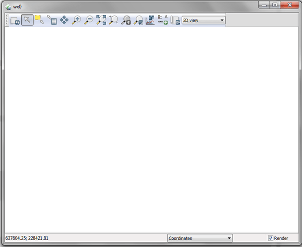
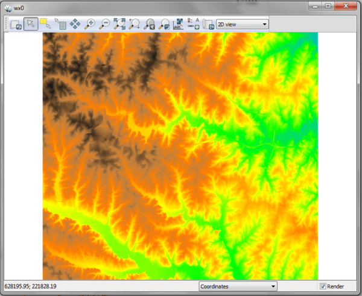

DESCRIPTION
d.mon allows the user to start, select, list, release, and
stop available graphics monitors.
Starting a monitor
In order to display on-screen GRASS graphics, the user must
start and select a graphics monitor. By default,
the start command actually runs two commands, to both start and
select whatever monitor is named by the user. The user can get a list
of running monitors by setting the -l flag on the command
line. Note that some monitor drivers use environment
variables or the specific
driver documentation.
When a monitor is started, it is therefore also
(automatically) selected for output, unless the
-s flag is set by the user; the user can also
explicitly select a monitor that has been started.
The desired monitor should be started once and need not be restarted
unless it is stopped for some reason. A monitor may continue to run
for any length of time, even when no GRASS session is being run.
Stopping a monitor
A graphics monitor has two different types of status: monitor
program not running, and monitor running. A monitor
that has been started and/or selected will be listed as running; a
monitor that has been stopped (or not started) will be listed as not
running. The -l flag will list all currently running monitors.
Selecting a monitor
When the user starts a monitor, it is also
(automatically) selected for graphics output unless the user
sets the -s flag. In order to use (direct graphics output to)
a monitor, the user must select that monitor for use, either
by simply starting the monitor without the -s flag or by
explicitly selecting the monitor for output. Only running monitors can
be selected for graphics output.
The user can run multiple graphics monitors by simply starting each of
the graphics monitors the user wishes to direct output to.
Releasing (unselecting) a monitor
Currently selected a monitor can be released by -r
flag.
NOTES
d.mon is designed for interactive use. If non-interactive use
is needed (e.g., in a script) set GRASS_RENDER_IMMEDIATE=png
(or =cairo) and use the related environment
variables to control output size etc.
EXAMPLES
wx0 monitor
To start the interactive wxGUI map
display, run

Figure: The initialization of display monitor wx0
All subsequently displayed data will be rendered on monitor wx0.
g.region raster=elevation -p
d.rast map=elevation

Figure: The display wx0 showing an elevation raster map
CAIRO file renderer monitor
A CAIRO monitor can be started (and selected) by
d.mon start=cairo output=out.pdf
List running monitors
To list the currently running monitors, use
d.mon -l
List of running monitors:
wx0
cairo
Show currently selected monitor
To identify the currently selected monitor, use
Switching between monitors
To switch back to interactive display mode, here to an earlier started and
still running wxGUI monitor, use
Stopping a monitor
To close the wxGUI monitor, run
SEE ALSO
d.erase,
d.redraw,
d.rast,
d.vect,
d.frame
See also list
of variables for rendering,
display drivers
AUTHOR
Martin Landa, OSGeoREL, Czech Technical University in Prague, Czech Republic